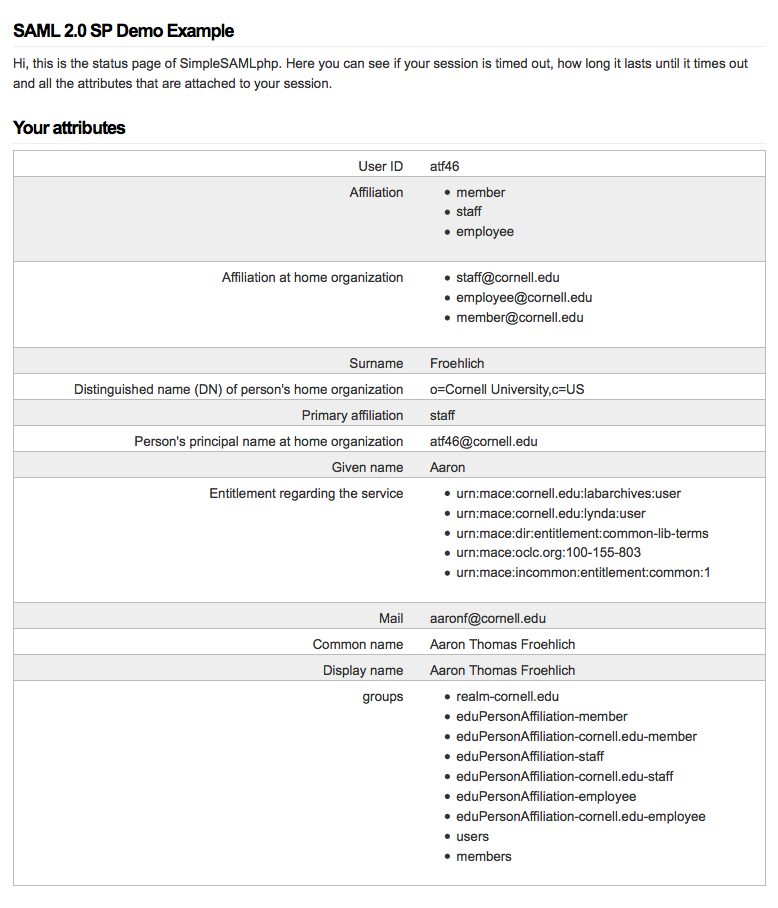

"Proudly Invented Elsewhere"
Leveraging Cornell-related Drupal Solutions Rather than Reinventing the Wheel
Presented by Aaron Froehlich and Eric Banford
Today's Wheels:
- CUWebAuth, Protected Content
- Google CSE
- CU Library Services, books and hours
- Faculty Data, AI and Vivo
- News from the Cornell Chronicle
- Events from Localist
CUWebAuth
The Problem: User authentication with NetID
The Solution:
The Actors

Requirements
- SimpleSAMLphp library
- SSL Certificate
- Session storage db
- simplesamlphp_auth module
Configuration
via the admin interface
via code:
/**
* Implements hook_install().
*/
function ilr_install() {
// Set some default values for the simplesamlphp_auth module
variable_set('simplesamlphp_auth_activate', 1);
variable_set('simplesamlphp_auth_authsource', 'cornell');
variable_set('simplesamlphp_auth_mailattr', 'mail');
variable_set('simplesamlphp_auth_registerusers', 1);
variable_set('simplesamlphp_auth_unique_id', 'uid');
$admin_role = user_role_load_by_name('administrator');
variable_set('simplesamlphp_auth_rolepopulation', "
{$admin_role->rid}:uid,=,atf46|
{$admin_role->rid}:uid,=,ddd1" // etc.
);
// $set the install directory
variable_set('simplesamlphp_auth_installdir', $simplesamlphp_installdir);
}
SAML Response Object
Protected Content
The Problem: Limiting content / functionality to users with valid NetIDs
The Solution:
Nodes vs. entitiesNodes
Custom Publishing Options
/**
* Implements hook_install().
*/
function custom_publishing_options_install() {
$spec = array(
'description' => 'Kerberized publishing option.',
'type' => 'int',
'not null' => TRUE,
'default' => 0
);
db_add_field('node', 'kerberized', $spec);
}
/**
* Implements hook_schema_alter().
*/
function custom_publishing_options_schema_alter(&$schema) {
$schema['node']['fields']['kerberized'] = array(
'description' => t('Kerberized', array('@name' => 'kerberized')),
'type' => 'int',
'not null' => TRUE,
'default' => 0,
);
}
/**
* Implements hook_form_alter()
* Adds the "kerberized" checkbox to the node publishing options tab
*/
function custom_publishing_options_form_alter(&$form, $form_state, $form_id) {
if (isset($form['#node_edit_form']) && $form['#node_edit_form'] === TRUE) {
$node = $form['#node'];
$form['options']['kerberized'] = array(
'#type' => 'checkbox',
'#title' => 'Kerberized',
'#default_value' => isset($node->kerberized) ? $node->kerberized : FALSE,
'#access' => user_access('administer nodes') ? TRUE : FALSE,
);
}
}
Nodes
Content authorization
/**
* Implements hook_node_access().
* Protects "kerberized" nodes from user's without NetID
*/
function basic_page_node_access($node, $op, $account) {
if ($op == 'view' && !empty($node->kerberized)) {
if (!ilr_user_has_netid()) {
drupal_set_message('You must be logged in with your NetID to access this page. Login', 'warning');
return NODE_ACCESS_DENY;
}
}
}
Entities
"Kerberized" setting
/**
* Implements hook_form_FORM_ID_alter.
* Adds the kerberized checkbox to entityform type options
*/
function forms_form_entityform_type_form_alter(&$form, &$form_state, $form_id) {
$default = (isset($form['#entityform_type']->data['kerberized']))
? $form['#entityform_type']->data['kerberized']
: 0;
$form['data']['kerberized'] = array(
'#type' => 'checkbox',
'#title' => t('This form requires NetID authentication'),
'#weight' => 0,
'#default_value' => $default,
);
}
Entities
Entityform authorization
/**
* Implements hook_form_BASE_FORM_ID_alter.
*/
function forms_form_entityform_edit_form_alter(&$form, &$entityform_state, $form_id) {
$entityform_type = entityform_type_load($bundle);
$is_kerberized_form = empty($entityform_type->data['kerberized'])
? FALSE
: $entityform_type->data['kerberized'];
if ($is_kerberized_form) {
_forms_handle_kerberized_form($form);
}
}
/**
* Adds kerberized values to forms when appropriate
* Logs user out if SAML Session missing (e.g. browser was closed)
*/
function _forms_handle_kerberized_form(&$form) {
if (user_is_logged_in()) {
if (ilr_user_has_netid() && _forms_saml_attributes_present()) {
_forms_set_kerberized_values($form); // Not going to review
} // SimpleSAMLAuth info missing, so force the user to log in again
// code redacted for simplicity
} // Remove the form
else {
$form = drupal_get_form('forms_login_form');
}
}
/**
* Returns a simple login button for NetID logins
*/
function forms_login_form($form, &$form_state) {
$form['netid'] = array(
'#markup' => 'You must log in with your NetID to view this form.
NetID Login
',
'#weight' => -10,
);
return $form;
}
Google CSE
The Problem: Creating a user friendly interface for site searching.
Simple Javascript Implementation
/**
* Implements hook_menu().
*/
function ilr_search_menu() {
$items = array();
$items['admin/config/system/ilr_search'] = array(
'title' => t('ILR Search Settings'),
'description' => t('Configure Google CSE Integration'),
'page callback' => 'drupal_get_form',
'page arguments' => array('ilr_search_admin'),
'file' => 'includes/ilr_search.admin.inc',
'access arguments' => array('administer ilr search'),
'type' => MENU_NORMAL_ITEM,
);
$items['search'] = array(
'page callback' => 'ilr_search_results_view',
'access arguments' => array('access content'),
);
return $items;
}
function ilr_search_results_view() {
$content = 'Please make sure javascript is enabled to see the search results.';
return $content;
}
/**
* Admin form.
*/
function ilr_search_admin($form, &$form_state) {
$form['ilr_search_google_key'] = array(
'#type' => 'textfield',
'#title' => t('Google CSE Key'),
'#default_value' => variable_get('ilr_search_google_key', '004310106128673806828:gxzzkns1chw')
);
return system_settings_form($form);
}
(function ($) {
Drupal.behaviors.ilr_search = {
attach: function (context, settings) {
var cx = Drupal.settings.ilr_search.ilr_search_google_key;
var gcse = document.createElement('script');
gcse.type = 'text/javascript';
gcse.async = true;
gcse.src = (document.location.protocol == 'https:' ? 'https:' : 'http:') + '//www.google.com/cse/cse.js?cx=' + cx;
var s = document.getElementsByTagName('script')[0];
s.parentNode.insertBefore(gcse, s);
}
};
}(jQuery));
Fragments
Hit the next arrow...
... to step through ...
... a fragmented slide.
Fragment Styles
There's different types of fragments, like:
grow
shrink
roll-in
fade-out
current-visible
highlight-red
highlight-blue
Transition Styles
You can select from different transitions, like:
None -
Fade -
Slide -
Convex -
Concave -
Zoom
Themes
reveal.js comes with a few themes built in:
Black (default) -
White -
League -
Sky -
Beige -
Simple
Serif -
Night -
Moon -
Solarized
Slide Backgrounds
Set data-background="#dddddd" on a slide to change the background color. All CSS color formats are supported.
Image Backgrounds
<section data-background="image.png">Tiled Backgrounds
<section data-background="image.png" data-background-repeat="repeat" data-background-size="100px">Video Backgrounds
<section data-background-video="video.mp4,video.webm">Background Transitions
Different background transitions are available via the backgroundTransition option. This one's called "zoom".
Reveal.configure({ backgroundTransition: 'zoom' })Background Transitions
You can override background transitions per-slide.
<section data-background-transition="zoom">Pretty Code
function linkify( selector ) {
if( supports3DTransforms ) {
var nodes = document.querySelectorAll( selector );
for( var i = 0, len = nodes.length; i < len; i++ ) {
var node = nodes[i];
if( !node.className ) {
node.className += ' roll';
}
}
}
}
Code syntax highlighting courtesy of highlight.js.
Marvelous List
- No order here
- Or here
- Or here
- Or here
Fantastic Ordered List
- One is smaller than...
- Two is smaller than...
- Three!
Tabular Tables
| Item | Value | Quantity |
|---|---|---|
| Apples | $1 | 7 |
| Lemonade | $2 | 18 |
| Bread | $3 | 2 |
Clever Quotes
These guys come in two forms, inline:
“The nice thing about standards is that there are so many to choose from”
and block:
“For years there has been a theory that millions of monkeys typing at random on millions of typewriters would reproduce the entire works of Shakespeare. The Internet has proven this theory to be untrue.”
Intergalactic Interconnections
You can link between slides internally, like this.
Speaker View
There's a speaker view. It includes a timer, preview of the upcoming slide as well as your speaker notes.
Press the S key to try it out.
Export to PDF
Presentations can be exported to PDF, here's an example:
Global State
Set data-state="something" on a slide and "something"
will be added as a class to the document element when the slide is open. This lets you
apply broader style changes, like switching the page background.
State Events
Additionally custom events can be triggered on a per slide basis by binding to the data-state name.
Reveal.addEventListener( 'customevent', function() {
console.log( '"customevent" has fired' );
} );
Take a Moment
Press B or . on your keyboard to pause the presentation. This is helpful when you're on stage and want to take distracting slides off the screen.
Much more
- Right-to-left support
- Extensive JavaScript API
- Auto-progression
- Parallax backgrounds
- Custom keyboard bindings